25 · Martina Rázusa (zilina) jen OSM: plocha:3.05 chodnik:6 pruh:2.75 pruh:2.75 s ortofotem: zelen:2.7 chodnik:6 pruh:3.45 pruh:3.45
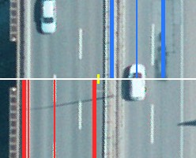
26 · Estakáda (zilina) jen OSM: pruh:3.25 pruh:3.25 s ortofotem: krajnice:0.58 pruh:3.3 pruh:5.03
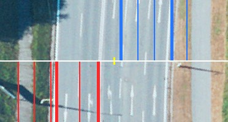
27 · Vysokoškolákov (zilina) jen OSM: pruh:2.75 pruh:2.75 pruh:2.75 chodnik:2.5 s ortofotem: nezname:2.65 zelen:2.7 nezname:0.85 pruh:3.77 pruh:3.03
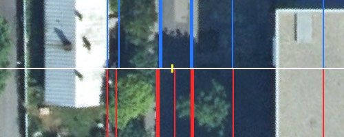
28 · Nábrežie mládeže (nitra) jen OSM: plocha:1.75 chodnik:6 pruh:4.45 chodnik:6 plocha:13.23 s ortofotem: zelen:1.3 chodnik:6 pruh:2.5 pruh:2.5 chodnik:6 plocha:13.13
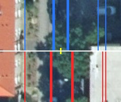
29 · Hodžova (nitra) jen OSM: chodnik:5.6 pruh:2.75 chodnik:6 plocha:1.5 s ortofotem: chodnik:5.05 pruh:4.2 chodnik:6 plocha:0.6
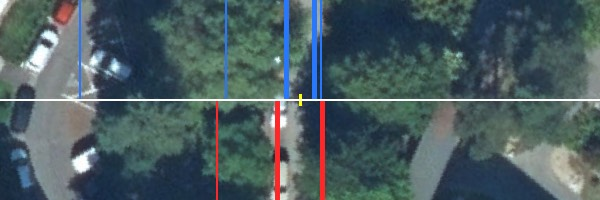
30 · Lomnická (nitra) jen OSM: plocha:14.63 chodnik:6 pruh:2.75 nezname:0.75 s ortofotem: zelen:27.2 chodnik:6 pruh:4.5
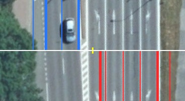
31 · Trieda Andreja Hlinku (nitra) jen OSM: chodnik:2.5 pruh:3.25 pruh:3.25 s ortofotem: krajnice:1.17 pruh:3.5 pruh:3.4 pruh:3.33 chodnik:2.5
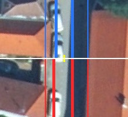
32 · Podzámska (nitra) jen OSM: chodnik:1.8 pruh:2.75 chodnik:2.7 s ortofotem: chodnik:1.35 pruh:3.2 chodnik:2.7
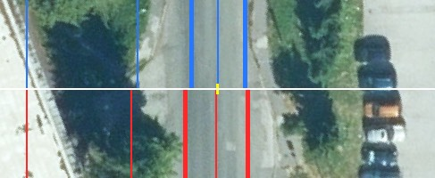
33 · Mičinská cesta (banska-bystrica) jen OSM: plocha:12.35 chodnik:6 pruh:3 pruh:3 s ortofotem: zelen:11.7 chodnik:6 pruh:3.5 pruh:3.5
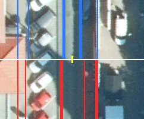
34 · Námestie Štefana Moyzesa (banska-bystrica) jen OSM: plocha:1.75 chodnik:6 pruh:2.75 chodnik:2.9 s ortofotem: plocha:1.3 chodnik:6 pruh:3.9 parkovani:2
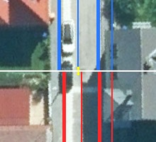
35 · Horné záhrady (banska-bystrica) jen OSM: pruh:2.75 pruh:2.75 chodnik:2 s ortofotem: pruh:2.5 pruh:2.5 chodnik:1.8
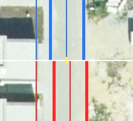
36 · Paľa Bielika (banska-bystrica) jen OSM: chodnik:2.25 pruh:2.75 pruh:2.75 s ortofotem: chodnik:2.85 pruh:2.7 pruh:2.7
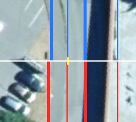
37 · Hurbanistov (presov) jen OSM: pruh:2.75 pruh:2.75 chodnik:5.4 s ortofotem: pruh:3.05 pruh:3.05 chodnik:5.25
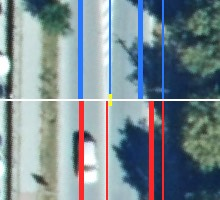
38 · Lesík delostrelcov (presov) jen OSM: pruh:3 pruh:3 nezname:2.25 s ortofotem: pruh:2.57 pruh:4.43 nezname:1.2
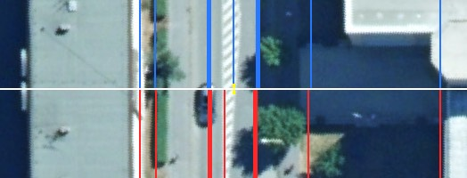
39 · Grešova (presov) jen OSM: plocha:1.7 chodnik:6 pruh:2.75 pruh:2.75 chodnik:6 plocha:14.45 s ortofotem: plocha:1.75 chodnik:6 krajnice:1.77 pruh:3.33 chodnik:6 plocha:14.8
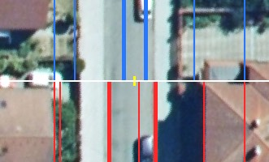
40 · Záborského (presov) jen OSM: plocha:2.45 chodnik:6 pruh_piktokoridor:2.75 chodnik:6 plocha:6.15 s ortofotem: zelen:0.7 chodnik:6 pruh_piktokoridor:3.7 parkovani:2 chodnik:6 zelen:4.95